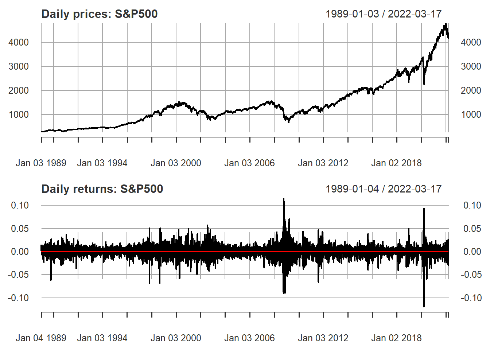
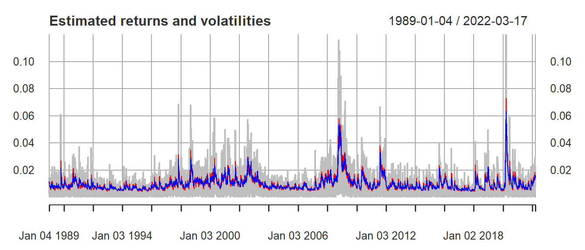
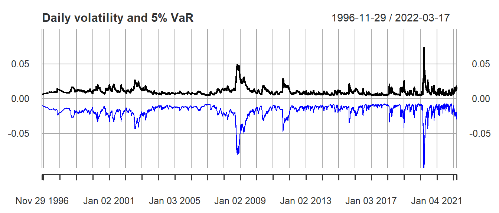
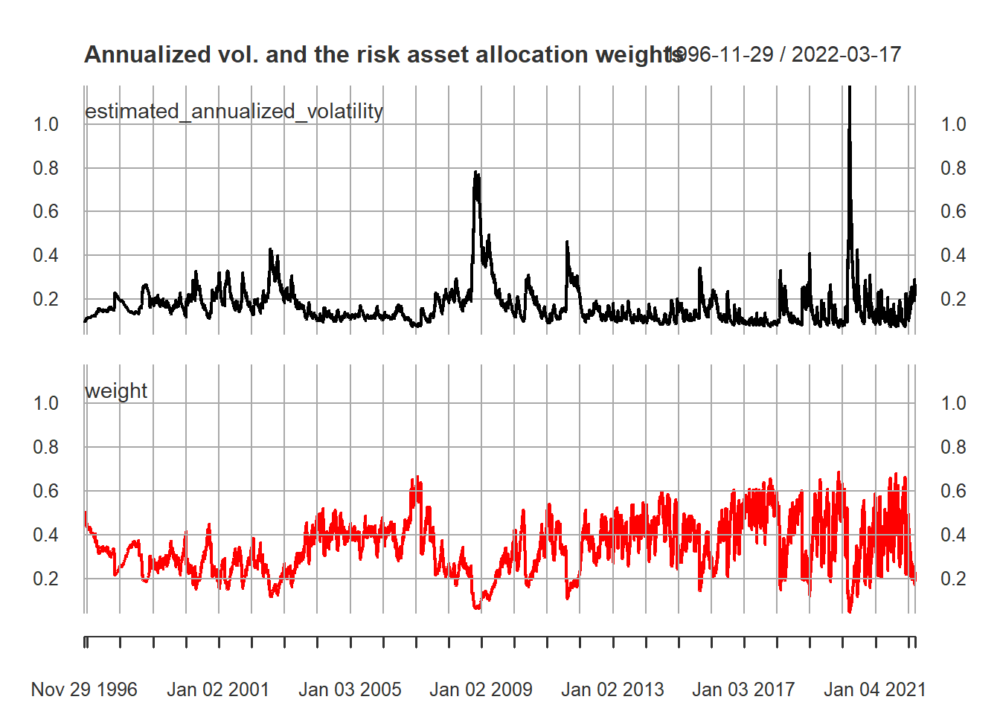

GARCH models proposed by Bollerslev (1986) are used to analyze the historical variance of the S&P500 stock index in order to find the periods of low and high sustained volatility in its returns. Likewise, a theoretical exercise on volatility predictions and asset allocation in a portfolio by means of volatility targets is developed, in the light of Tobin’s two-fund separation theorem.
Author
César Díaz Tavera
Published
August 30, 2022
Introduction
Modern portfolio theory was introduced by Nobel Prize-winning economist Henry Markowitz in 1952 with his essay ‘Portfolio Selection’ published in the Journal of Finance. Fundamentally, this theory assumes that the trade-off between return and risk1 of financial assets should not be considered on an individual basis (which was the consensus advice at the time), but that the trade-off should be considered from the portfolio as a whole. In other words, investors should focus on selecting portfolios, rather than building their portfolios from the individual selection of attractive assets. Out of the entire universe of possible portfolios, some will optimally balance risk and reward. These optimal portfolios form what Markowitz called the efficient frontier. Thus, Markowitz (1952) proposed a mathematical model for diversification.
However, Henry Markowitz only considered risky assets in his theory. James Tobin (1958) extended Markowitz’s work by adding a risk-free asset to the analysis, which led to the emergence of the concepts of the ‘super-efficient portfolio’ and the ‘capital market line’. Because they are leveraged, portfolios on the capital market line can outperform portfolios on the efficient frontier (Glyn Horton, 2013). Therefore, under Tobin’s perspective, investors should diversify their portfolio by investing a \(w\) proportion of their wealth in a risky asset and a \(1-w\) proportion in risk-free assets.
In this paper we make use of the General Conditional Heteroskedasticity models proposed by Bollerslev (1986), to analyze in depth the historical variance of the Standard and Poor’s 500 stock index in order to find the periods of sustained low and high volatility in its returns. Thus, with the knowledge about the behavior of these volatility clusters, a theoretical exercise is proposed on the volatility predictions of the model to the asset allocation in a portfolio by means of volatility targeting, in the light of Tobin’s two-fund separation theorem.
Results
Preliminary: libraries used, data wrangling and analysis of returns
Code
# Wrangling datalibrary(tidyverse)library(readxl)library(magrittr)# Financial analysis, time series and Volatilitylibrary(quantmod)library(xts)library(PerformanceAnalytics)library(rugarch)# For tableslibrary(knitr)library(kableExtra)
Visually, one can observe how the volatility of returns changes over time. You see that periods of large returns (positive or negative) tend to be followed by large returns, while low returns are followed by low returns. So you can see these periods of sustained high or low volatility, known as volatility clusters.
Code
# Upload the datasp500prices <-getSymbols("^GSPC",auto.assign =FALSE, from ="1989-01-03", to =as.Date("2022-03-18"))$'GSPC.Close'colnames(sp500prices) <-'SP500'# Calculate daily returnssp500ret <-CalculateReturns(sp500prices)sp500ret <- sp500ret[-1,]line_zero <- sp500retline_zero$zero <-0# Graph the price and return series of the S&P500graf_returns <-plot(sp500ret, main ="Daily returns: S&P500")graf_returns <-addSeries(line_zero[, "zero"], col ="red", on =1)par(mfrow =c(2,1))plot(sp500prices, main ="Daily prices: S&P500")graf_returns

Code
# Calculating annualized volatilities in years close to economic crisessd_annualized <-as.data.frame(cbind("2008"=sqrt(252)*sd(sp500ret["2008"]), "2009"=sqrt(252)*sd(sp500ret["2009"]), "2017"=sqrt(252)*sd(sp500ret["2017"]), "2018"=sqrt(252)*sd(sp500ret["2018"]), "2019"=sqrt(252)*sd(sp500ret["2019"]), "2020"=sqrt(252)*sd(sp500ret["2020"]), "2021"=sqrt(252)*sd(sp500ret["2021"]),"total"=sqrt(252)*sd(sp500ret, na.rm = T)))kable(sd_annualized, digits =4, caption ="Calculating annualized volatilities in years close to economic crises", booktabs = T) %>%kable_styling(full_width = T)
Calculating annualized volatilities in years close to economic crises
2008
2009
2017
2018
2019
2020
2021
total
0.4097
0.2729
0.0669
0.1705
0.1247
0.3443
0.131
0.1798
Volatility fluctuations over different time periods can be observed by means of the 1-month and 3-month rolling volatility:
Code
par(mfrow=c(2,1))# 1-month rolling annualized volatility estimatechart.RollingPerformance(R = sp500ret["2000::2022"], width =22,FUN ="sd.annualized", scale =252, main ="1-month rolling volatility")# 3-months rolling annualized volatility estimatechart.RollingPerformance(R = sp500ret["2000::2022"], width =3*22,FUN ="sd.annualized", scale =252, main ="3-month rolling volatility")
As can be seen, the volatility of S&P500 returns varies over time and may depend on past variance, so to study its dynamics a process is needed that allows the conditional variance to change over time as a function of past errors, in the manner of the autoregressive conditional heteroscedasticity (ARCH) model proposed by Engle (1982), and the subsequent generalization (GARCH) that allows for a longer memory in the model and a more flexible lag structure (Bollerslev, 1986).
When developing conditional heteroscedasticity models, the specifications for the equations for the conditional mean, conditional variance and conditional error distribution should be kept in mind.
Specification of the conditional variance and conditional error distribution
Code
# Specification of the Standard GARCH modelgarchspec <-ugarchspec(mean.model =list(armaOrder =c(0,0)),variance.model =list(model ="sGARCH"), distribution.model ="norm")garchfit <-ugarchfit(data = sp500ret, spec = garchspec)# Obtain the estimated volatility garchvol <-sigma(garchfit)plot(garchvol, main ="Estimated Volatility")
Code
# Calculate the unconditional volatility and standardized returns.kable(sqrt(uncvariance(garchfit)), digits =4, booktabs = T,col.names ="Unconditional inflation volatility")
Unconditional inflation volatility
0.0109
Code
stdret <-residuals(garchfit, standardize =TRUE)
Code
# Visual comparison of error distributionchart.Histogram(stdret, methods =c("add.normal","add.density"), colorset =c("gray","red","blue"), main ="Distribution of standardized returns vs. normal dist.")
Due to the presence of extreme events, the empirical distribution of the returns have thick tails, so the normality assumption may be inadequate and may have generated biased estimators. Considering that the distribution of the standardized returns does not follow a normal distribution, as they have excess kurtosis, thicker tails and an asymmetric effect, setting a t-Student distribution with skewness instead of a normal distribution for the specification of the conditional error distribution leads to a more realistic GARCH model.
On the other hand, when there is a leverage effect, negative news about returns (negative shocks) affect the variance more than positive news (positive shocks). Because of the asymmetric effect of the distribution, a gjr-GARCH model is applied to confirm a possible leverage effect. In this model, an asymmetric variance response to positive and negative news is allowed for by assigning more weight on negative news by taking \((\alpha + \gamma)*\varepsilon_t^2\) when \(\varepsilon_t \le 0\) instead of only \(\alpha*\varepsilon_t^2\) when \(\varepsilon_t > 0\). The news impact curve is a useful tool for visualizing the response of variance to surprise in returns.
Code
# GJR-GARCH Specificationgjrgarchspec <-ugarchspec(mean.model =list(armaOrder =c(0,0)),variance.model =list(model ="gjrGARCH"),distribution.model ="sstd")gjrgarchfit <-ugarchfit(data = sp500ret, spec = gjrgarchspec)# Obtain the estimated volatility gjrgarchvol_mean <-fitted(gjrgarchfit)gjrgarchvol <-sigma(gjrgarchfit)# Compare estimated volatilitiesplotvol <-plot(abs(sp500ret), col ="grey", main ="Estimated returns and volatilities")plotvol <-addSeries(gjrgarchvol, col ="red", on=1)plotvol <-addSeries(garchvol, col ="blue", on=1)plotvol

Code
# News Curveplot(gjrgarchfit, which =12)
An asymmetric leverage effect can be seen in the figure above. From it we conclude that the conditional variance reaction is greater to past negative shocks than to past positive shocks of the same magnitude in S&P500 returns. So much so, that the market is relatively insensitive to positive shocks compared to the increase and sensitivity of volatility that accompanies negative shocks with a further decline in prices.
Model selection based on information criteria
Code
# log-likelihood of both modelslikelihood <-data.frame(Garch =likelihood(garchfit), gjrGarch =likelihood(gjrgarchfit))rownames(likelihood) <-"Log-Likelihood"# Information criteriainformation_criteria <-data.frame(Garch =infocriteria(garchfit), gjrGarch =infocriteria(gjrgarchfit))colnames(information_criteria) <-c("Garch", "gjrGarch")kable(rbind(information_criteria, likelihood), booktabs = T,col.names =c("Garch", "gjrGarch"),digits =4, format ="latex",caption ="Information Criteria for Conditional Heteroscedasticity Models") %>%kable_styling(full_width = T, latex_options =c("hold_position"))
Based on the information criteria, it is concluded that the GJR-GARCH model with t-Student distribution is a more adequate and realistic model than a simple model with normal distribution.
The mean model
Modeling the dynamics of the conditional mean generally has a large effect on estimated returns, but only a small effect on volatility predictions. Financial econometrics theory suggests that the effect can be so minimal, that if the interest is only in the volatility dynamics, one can generally ignore the mean dynamics and assume a simple constant mean specification to save parsimony. To confirm that this is the case, we will consider an AR(1) model and a GARCH model in mean to see how the volatilities are related.
In the AR(1) model, the sign of the autoregressive parameter depends on the market reaction to the news \(\mu_t = \mu + \rho(R_{t-1} - \mu)\). A positive value of \(\rho\) is consistent with the interpretation that markets underreact to news, leading to momentum in returns (above-average returns are followed by above-average returns). A negative value of \(|rho\) is consistent with the interpretation that markets overreact to news, leading to a reversal in returns (above-average returns are followed by below-average returns). In any case, if \(||rho|<1\), then deviations of returns from their long-term mean (\(\mu\)) are transitory.
So the question arises: are the daily returns of the S&P500 characterized by momentum or a reversal effect in its AR(1) dynamics?
Code
# AR(1) specification of an asymmetric GARCHargarchspec <-ugarchspec(mean.model =list(armaOrder =c(1,0)),variance.model =list(model ="gjrGARCH"),distribution.model ="sstd")argarchfit <-ugarchfit(data = sp500ret, spec = garchspec)# Coefficients of the mean modelkable(coef(argarchfit)[c(1:2)], digits =6, booktabs = T, format.args =list(scientific =FALSE), col.names ="Coeficientes del modelo GARCH con una especificación AR(1) en la media condicional")
Coeficientes del modelo GARCH con una especificación AR(1) en la media condicional
mu
0.000642
omega
0.000002
Code
# Mean and volatility of the AR(1) modelar1_mean <-fitted(argarchfit)ar1_vol <-sigma(argarchfit)
Since the AR(1) coefficient in the mean model is negative, we find a reversal effect in terms of predicted return. After an above-average return, we expect a below-average return. And after below-average return, we expect above-average return. Also, since this coefficient is close to zero, deviations from daily returns are transitory.
In contrast to the use of an ARMA model for the mean, we have that a GARCH model in mean does not make use of the autocorrelation of returns. Instead, it exploits the relationship between the expected return and the variance of the return. The higher the risk in terms of variance, the higher the expected return of the investment should be. So it is a model that quantifies the trade-off between risk and reward.
Code
# Specification of a GARCH in meangim_garchspec <-ugarchspec( mean.model =list(armaOrder =c(0,0), archm =TRUE, archpow =2),variance.model =list(model ="gjrGARCH"), distribution.model ="sstd")gim_garchfit <-ugarchfit(data = sp500ret , spec = gim_garchspec)# Mean and volatility of the AR(1) modelgim_mean <-fitted(gim_garchfit)gim_vol <-sigma(gim_garchfit)# Correlation between the estimated returns of the AR(1) model and the average modelkable(cor(ar1_mean, gim_mean), col.names ="Correlación entre los retornos estimados del modelo Garch-AR(1) y el modelo Garch en media", format ="latex", digits =4, booktabs = T) %>%kable_styling(full_width = T)
Code
# Correlation between the estimated returns of the mean model and the AR(1) modelmodel_correlation <-as.data.frame(cor(merge(gjrgarchvol, ar1_vol, gim_vol)))rownames(model_correlation) <-c("gjrGarch", "AR(1)", "Garch in mean")colnames(model_correlation) <-c("gjrGarch", "AR(1)", "Garch in mean")kable(model_correlation, booktabs = T,digits =4, format ="latex",caption ="Correlation between estimated volatilities for different specifications of Garch models") %>%kable_styling(full_width = T)
There is a large disagreement between the predicted returns obtained with the Garch-AR(1) and GARCH models on average, as evidenced by the low correlation. Because the mean return is close to zero for daily returns, these differences in mean prediction have little impact on volatility predictions. Their correlation is almost one. Since we are only interested in volatility dynamics, and to keep parsimony, we will estimate GARCH models with constant mean.
Extension of the analysis of the volatility dynamics of SP500 returns.
In the past graphs, we observed how financial return volatility is clustered over time: periods of above-average volatility are followed by periods of below-average volatility. In the long term, it is expected that:
When volatility is high, volatility will decline and return to its long-term average.
When volatility is low, volatility will increase and return to its long-term average.
In the estimation of GARCH models we can exploit this mean-reverting behavior of volatility by volatility targeting and confirm that the long-run volatility implied by the GARCH model is equal to the sample standard deviation.
Code
# Specification for variance targetingtargarchspec <-ugarchspec(mean.model =list(armaOrder =c(0,0)),variance.model =list(model ="gjrGARCH",variance.targeting =TRUE),distribution.model ="sstd")targarchfit <-ugarchfit(data = sp500ret, spec = targarchspec)targarchvol <-sigma(targarchfit)# Compare against gjrGarch# log-likelihood of the two modelslikelihood_2 <-data.frame(gjrGarch =likelihood(gjrgarchfit), tarGarch =likelihood(targarchfit))rownames(likelihood_2) <-"Log-Likelihood"# Information criteriainformation_criteria_2 <-data.frame(gjrGarch =infocriteria(gjrgarchfit), tarGarch =infocriteria(targarchfit))colnames(information_criteria_2) <-c("gjrGarch", "tarGarch")kable(rbind(information_criteria_2, likelihood_2), booktabs = T,col.names =c("gjrGarch", "Volatility targeting gjrGarch"),digits =4, format ="latex",caption ="Information Criteria for GARCH models with volatility targeting") %>%kable_styling(full_width = T, latex_options =c("hold_position"))
Code
# Implied long term volatilitykable(data.frame(Garch =sqrt(uncvariance(garchfit)), tarGarch =sqrt(uncvariance(targarchfit))), col.names =c("Simple GARCH model", "GJR-Garch model with volatility targeting"), format ="latex", digits =4, booktabs = T,caption ="Implied long-term volatility") %>%kable_styling(full_width = T, latex_options =c("hold_position"))
The models that have been studied so far lead to an in-sample volatility estimate obtained by estimating the GARCH model only once and using the full time series, which can cause bias (look-ahead bias). However, in moving window models these biases are avoided by conditioning the estimation to use only the returns available at the previous time of estimation. That is, the model would be re-estimated in each window using only the yields that are actually observable at the time of estimation.
Code
# Specification for garch on movable windowsrollgarchspec <-ugarchspec(mean.model =list(armaOrder =c(0,0)),variance.model =list(model ="gjrGARCH",variance.targeting =TRUE),distribution.model ="sstd")rollgarchfit <-ugarchroll(garchspec, data = sp500ret,n.start =2000, refit.window ="moving", refit.every =500)# Mobile predictionspreds <-as.data.frame(rollgarchfit)# Comparison of the estimated volatility in the in-sample model and the moving modelgarchvolroll <-xts(preds$Sigma, order.by =as.Date(rownames(preds)))volplot <-plot(gjrgarchvol, col ="darkgrey", lwd =1.5, main ="In-sample and moving window volatility forecasts")volplot <-addSeries(garchvolroll, col ="blue", on =1)plot(volplot)

Tactical Asset Allocation using Target Volatility** **Targeted Volatility
GARCH volatility predictions have a direct practical use in portfolio allocation. According to James Tobin’s two-fund separation theorem, you should invest a proportion w of your wealth in a risky portfolio and the remainder in a risk-free asset, such as a U.S. Treasury bill. If you target a portfolio with an annualized volatility of 5%, and the annualized volatility of the risky asset is w, then you should invest (0.05/w) in the risky asset, in this case, the S&P500.
Code
# Annualized volatility from gjrGARCH moving window model with # asymmetric t-Student distributionestimated_annualized_volatility <-sqrt(252)*garchvolroll# Calculate the weights assigned to the risky asset with a target volatility of 5% per year. weight <-0.05/ estimated_annualized_volatility# Compare the annualized volatility with the portfolio's weightsplot(merge(estimated_annualized_volatility, weight), multi.panel =TRUE,main ="Annualized vol. and the risk asset allocation weights")

In the above chart it is easy to observe the dynamics of asset allocation within a portfolio. In our portfolio composed of U.S. treasury bills and the S&P500, since treasury bills are risk-free, the question that arises is what weight should be assigned to the S&P500 within the portfolio given the risk exposure constraint we impose on ourselves. By March 2022, the model recommends a portfolio with approximately 20% exposure to the S&P500 and 80% in risk-free assets with a target volatility of 5%.
Brief application of a VaR - Value at Risk.
The value-at-risk charts show substantial temporal variation in downside risk. This time variation is primarily due to the time variation in volatility.
Code
# 5% Value at RiskgarchVaR <-quantile(rollgarchfit, probs =0.05)# Volatility for Value at Riskgarchvolroll_var <-xts(preds$Sigma, order.by =time(garchVaR))# Visual analysis of movementsgarchplot <-plot(garchvolroll_var, ylim =c(-0.1, 0.1), main ="Daily volatility and 5% VaR")garchplot <-addSeries(garchVaR, on =1, col ="blue")plot(garchplot, main ="Daily volatility and 5% VaR")
The high co-movement between the two series is notorious. The intuition is that, if volatility soars, there is a risk of losing more money. That is why the value at risk also becomes more extreme. In March 2022, the value at risk of this portfolio is 1.95%, or almost $20 for every $1,000 invested in the risky asset.
Using the weights assigned in the previous exercise, if one were to invest $100,000 today: $20,000 would be invested in the S&P500 and $80,000 in U.S. Treasury bills. In aggregate, the portfolio would have a Value at Risk of $390.5. An amount exposed to risk of only 0.391% of invested capital.
Footnotes
To analyze these measures of profitability and risk, Markowitz proposed to take as proxies for them the expected return and variance, respectively.↩︎
@online{díaztavera2022,
author = {César Díaz Tavera},
title = {Analyzing the Volatility of the {Standard} and {Poor’s} 500},
date = {2022-08-30},
url = {https://cesardt97.github.io/Blog/posts/my-first-blog},
langid = {en}
}
---title: "Analyzing the volatility of the Standard and Poor's 500"description: | GARCH models proposed by Bollerslev (1986) are used to analyze the historical variance of the S&P500 stock index in order to find the periods of low and high sustained volatility in its returns. Likewise, a theoretical exercise on volatility predictions and asset allocation in a portfolio by means of volatility targets is developed, in the light of Tobin's two-fund separation theorem.author: "César Díaz Tavera"date: 2022-08-30categories: [Financial Econometric, GARCH, Volatility]image: "financial-econometrics.png"citation: url: https://cesardt97.github.io/Blog/posts/my-first-blogparams: slug: volatily-financial-asset date: 2022-08-30---## **Introduction**Modern portfolio theory was introduced by Nobel Prize-winning economist Henry Markowitz in 1952 with his essay 'Portfolio Selection' published in the *Journal of Finance*. Fundamentally, this theory assumes that the trade-off between return and risk[^1] of financial assets should not be considered on an individual basis (which was the consensus advice at the time), but that the trade-off should be considered from the portfolio as a whole. In other words, investors should focus on selecting portfolios, rather than building their portfolios from the individual selection of attractive assets. Out of the entire universe of possible portfolios, some will optimally balance risk and reward. These optimal portfolios form what Markowitz called the *efficient frontier*. Thus, Markowitz (1952) proposed a mathematical model for **diversification**.[^1]: To analyze these measures of profitability and risk, Markowitz proposed to take as *proxies* for them the expected return and variance, respectively.However, Henry Markowitz only considered risky assets in his theory. James Tobin (1958) extended Markowitz's work by adding a risk-free asset to the analysis, which led to the emergence of the concepts of the 'super-efficient portfolio' and the 'capital market line'. Because they are leveraged, portfolios on the capital market line can outperform portfolios on the efficient frontier (Glyn Horton, 2013). Therefore, under Tobin's perspective, investors should diversify their portfolio by investing a $w$ proportion of their wealth in a risky asset and a $1-w$ proportion in risk-free assets.In this paper we make use of the General Conditional Heteroskedasticity models proposed by Bollerslev (1986), to analyze in depth the historical variance of the *Standard and Poor's 500* stock index in order to find the periods of sustained low and high volatility in its returns. Thus, with the knowledge about the behavior of these volatility clusters, a theoretical exercise is proposed on the volatility predictions of the model to the asset allocation in a portfolio by means of volatility targeting, in the light of Tobin's two-fund separation theorem.## Results### Preliminary: libraries used, data wrangling and analysis of returns```{r librerias, echo=TRUE, results='hide', message=FALSE, warning=FALSE}# Wrangling datalibrary(tidyverse)library(readxl)library(magrittr)# Financial analysis, time series and Volatilitylibrary(quantmod)library(xts)library(PerformanceAnalytics)library(rugarch)# For tableslibrary(knitr)library(kableExtra)```Visually, one can observe how the volatility of returns changes over time. You see that periods of large returns (positive or negative) tend to be followed by large returns, while low returns are followed by low returns. So you can see these periods of sustained high or low volatility, known as volatility clusters.```{r datos, warning=FALSE, echo=TRUE}# Upload the datasp500prices <-getSymbols("^GSPC",auto.assign =FALSE, from ="1989-01-03", to =as.Date("2022-03-18"))$'GSPC.Close'colnames(sp500prices) <-'SP500'# Calculate daily returnssp500ret <-CalculateReturns(sp500prices)sp500ret <- sp500ret[-1,]line_zero <- sp500retline_zero$zero <-0# Graph the price and return series of the S&P500graf_returns <-plot(sp500ret, main ="Daily returns: S&P500")graf_returns <-addSeries(line_zero[, "zero"], col ="red", on =1)par(mfrow =c(2,1))plot(sp500prices, main ="Daily prices: S&P500")graf_returns``````{r Annualized volatilities, echo=TRUE}# Calculating annualized volatilities in years close to economic crisessd_annualized <-as.data.frame(cbind("2008"=sqrt(252)*sd(sp500ret["2008"]), "2009"=sqrt(252)*sd(sp500ret["2009"]), "2017"=sqrt(252)*sd(sp500ret["2017"]), "2018"=sqrt(252)*sd(sp500ret["2018"]), "2019"=sqrt(252)*sd(sp500ret["2019"]), "2020"=sqrt(252)*sd(sp500ret["2020"]), "2021"=sqrt(252)*sd(sp500ret["2021"]),"total"=sqrt(252)*sd(sp500ret, na.rm = T)))kable(sd_annualized, digits =4, caption ="Calculating annualized volatilities in years close to economic crises", booktabs = T) %>%kable_styling(full_width = T)```Volatility fluctuations over different time periods can be observed by means of the 1-month and 3-month rolling volatility:```{r Rolling volatility, echo=TRUE}par(mfrow=c(2,1))# 1-month rolling annualized volatility estimatechart.RollingPerformance(R = sp500ret["2000::2022"], width =22,FUN ="sd.annualized", scale =252, main ="1-month rolling volatility")# 3-months rolling annualized volatility estimatechart.RollingPerformance(R = sp500ret["2000::2022"], width =3*22,FUN ="sd.annualized", scale =252, main ="3-month rolling volatility")```As can be seen, the volatility of S&P500 returns varies over time and may depend on past variance, so to study its dynamics a process is needed that allows the conditional variance to change over time as a function of past errors, in the manner of the autoregressive conditional heteroscedasticity (ARCH) model proposed by Engle (1982), and the subsequent generalization (GARCH) that allows for a longer memory in the model and a more flexible lag structure (Bollerslev, 1986).When developing conditional heteroscedasticity models, the specifications for the equations for the conditional mean, conditional variance and conditional error distribution should be kept in mind.### Specification of the conditional variance and conditional error distribution```{r a simple model, echo=TRUE, fig.height = 3}# Specification of the Standard GARCH modelgarchspec <-ugarchspec(mean.model =list(armaOrder =c(0,0)),variance.model =list(model ="sGARCH"), distribution.model ="norm")garchfit <-ugarchfit(data = sp500ret, spec = garchspec)# Obtain the estimated volatility garchvol <-sigma(garchfit)plot(garchvol, main ="Estimated Volatility")# Calculate the unconditional volatility and standardized returns.kable(sqrt(uncvariance(garchfit)), digits =4, booktabs = T,col.names ="Unconditional inflation volatility")stdret <-residuals(garchfit, standardize =TRUE)``````{r error distribution comparison, echo=TRUE, fig.height = 4}# Visual comparison of error distributionchart.Histogram(stdret, methods =c("add.normal","add.density"), colorset =c("gray","red","blue"), main ="Distribution of standardized returns vs. normal dist.")```Due to the presence of extreme events, the empirical distribution of the returns have thick tails, so the normality assumption may be inadequate and may have generated biased estimators. Considering that the distribution of the standardized returns does not follow a normal distribution, as they have excess kurtosis, thicker tails and an asymmetric effect, setting a t-Student distribution with skewness instead of a normal distribution for the specification of the conditional error distribution leads to a more realistic GARCH model.On the other hand, when there is a leverage effect, negative news about returns (negative shocks) affect the variance more than positive news (positive shocks). Because of the asymmetric effect of the distribution, a gjr-GARCH model is applied to confirm a possible leverage effect. In this model, an asymmetric variance response to positive and negative news is allowed for by assigning more weight on negative news by taking $(\alpha + \gamma)*\varepsilon_t^2$ when $\varepsilon_t \le 0$ instead of only $\alpha*\varepsilon_t^2$ when $\varepsilon_t > 0$. The news impact curve is a useful tool for visualizing the response of variance to surprise in returns.```{r GJR-Garch, echo=TRUE, fig.height = 3}# GJR-GARCH Specificationgjrgarchspec <-ugarchspec(mean.model =list(armaOrder =c(0,0)),variance.model =list(model ="gjrGARCH"),distribution.model ="sstd")gjrgarchfit <-ugarchfit(data = sp500ret, spec = gjrgarchspec)# Obtain the estimated volatility gjrgarchvol_mean <-fitted(gjrgarchfit)gjrgarchvol <-sigma(gjrgarchfit)# Compare estimated volatilitiesplotvol <-plot(abs(sp500ret), col ="grey", main ="Estimated returns and volatilities")plotvol <-addSeries(gjrgarchvol, col ="red", on=1)plotvol <-addSeries(garchvol, col ="blue", on=1)plotvol``````{r News Curve, echo=TRUE, fig.height = 4}# News Curveplot(gjrgarchfit, which =12)```An asymmetric leverage effect can be seen in the figure above. From it we conclude that the conditional variance reaction is greater to past negative shocks than to past positive shocks of the same magnitude in S&P500 returns. So much so, that the market is relatively insensitive to positive shocks compared to the increase and sensitivity of volatility that accompanies negative shocks with a further decline in prices.**Model selection based on information criteria**```{r Information criteria, echo=TRUE}# log-likelihood of both modelslikelihood <-data.frame(Garch =likelihood(garchfit), gjrGarch =likelihood(gjrgarchfit))rownames(likelihood) <-"Log-Likelihood"# Information criteriainformation_criteria <-data.frame(Garch =infocriteria(garchfit), gjrGarch =infocriteria(gjrgarchfit))colnames(information_criteria) <-c("Garch", "gjrGarch")kable(rbind(information_criteria, likelihood), booktabs = T,col.names =c("Garch", "gjrGarch"),digits =4, format ="latex",caption ="Information Criteria for Conditional Heteroscedasticity Models") %>%kable_styling(full_width = T, latex_options =c("hold_position"))```Based on the information criteria, it is concluded that the GJR-GARCH model with t-Student distribution is a more adequate and realistic model than a simple model with normal distribution.### The mean modelModeling the dynamics of the conditional mean generally has a large effect on estimated returns, but only a small effect on volatility predictions. Financial econometrics theory suggests that the effect can be so minimal, that if the interest is only in the volatility dynamics, one can generally ignore the mean dynamics and assume a simple constant mean specification to save parsimony. To confirm that this is the case, we will consider an AR(1) model and a GARCH model in mean to see how the volatilities are related.In the AR(1) model, the sign of the autoregressive parameter depends on the market reaction to the news $\mu_t = \mu + \rho(R_{t-1} - \mu)$. A positive value of $\rho$ is consistent with the interpretation that markets underreact to news, leading to momentum in returns (above-average returns are followed by above-average returns). A negative value of $|rho$ is consistent with the interpretation that markets overreact to news, leading to a reversal in returns (above-average returns are followed by below-average returns). In any case, if $||rho|<1$, then deviations of returns from their long-term mean ($\mu$) are transitory.So the question arises: are the daily returns of the S&P500 characterized by momentum or a reversal effect in its AR(1) dynamics?```{r AR1, echo=TRUE}# AR(1) specification of an asymmetric GARCHargarchspec <-ugarchspec(mean.model =list(armaOrder =c(1,0)),variance.model =list(model ="gjrGARCH"),distribution.model ="sstd")argarchfit <-ugarchfit(data = sp500ret, spec = garchspec)# Coefficients of the mean modelkable(coef(argarchfit)[c(1:2)], digits =6, booktabs = T, format.args =list(scientific =FALSE), col.names ="Coeficientes del modelo GARCH con una especificación AR(1) en la media condicional")# Mean and volatility of the AR(1) modelar1_mean <-fitted(argarchfit)ar1_vol <-sigma(argarchfit)```Since the AR(1) coefficient in the mean model is negative, we find a reversal effect in terms of predicted return. After an above-average return, we expect a below-average return. And after below-average return, we expect above-average return. Also, since this coefficient is close to zero, deviations from daily returns are transitory.In contrast to the use of an ARMA model for the mean, we have that a GARCH model in mean does not make use of the autocorrelation of returns. Instead, it exploits the relationship between the expected return and the variance of the return. The higher the risk in terms of variance, the higher the expected return of the investment should be. So it is a model that quantifies the trade-off between risk and reward.```{r garch in mean, echo=TRUE}# Specification of a GARCH in meangim_garchspec <-ugarchspec( mean.model =list(armaOrder =c(0,0), archm =TRUE, archpow =2),variance.model =list(model ="gjrGARCH"), distribution.model ="sstd")gim_garchfit <-ugarchfit(data = sp500ret , spec = gim_garchspec)# Mean and volatility of the AR(1) modelgim_mean <-fitted(gim_garchfit)gim_vol <-sigma(gim_garchfit)# Correlation between the estimated returns of the AR(1) model and the average modelkable(cor(ar1_mean, gim_mean), col.names ="Correlación entre los retornos estimados del modelo Garch-AR(1) y el modelo Garch en media", format ="latex", digits =4, booktabs = T) %>%kable_styling(full_width = T)# Correlation between the estimated returns of the mean model and the AR(1) modelmodel_correlation <-as.data.frame(cor(merge(gjrgarchvol, ar1_vol, gim_vol)))rownames(model_correlation) <-c("gjrGarch", "AR(1)", "Garch in mean")colnames(model_correlation) <-c("gjrGarch", "AR(1)", "Garch in mean")kable(model_correlation, booktabs = T,digits =4, format ="latex",caption ="Correlation between estimated volatilities for different specifications of Garch models") %>%kable_styling(full_width = T)```There is a large disagreement between the predicted returns obtained with the Garch-AR(1) and GARCH models on average, as evidenced by the low correlation. Because the mean return is close to zero for daily returns, these differences in mean prediction have little impact on volatility predictions. Their correlation is almost one. Since we are only interested in volatility dynamics, and to keep parsimony, we will estimate GARCH models with constant mean.### Extension of the analysis of the volatility dynamics of SP500 returns.In the past graphs, we observed how financial return volatility is clustered over time: periods of above-average volatility are followed by periods of below-average volatility. In the long term, it is expected that:- When volatility is high, volatility will decline and return to its long-term average.- When volatility is low, volatility will increase and return to its long-term average.In the estimation of GARCH models we can exploit this mean-reverting behavior of volatility by volatility targeting and confirm that the long-run volatility implied by the GARCH model is equal to the sample standard deviation.```{r, echo=TRUE}# Specification for variance targetingtargarchspec <-ugarchspec(mean.model =list(armaOrder =c(0,0)),variance.model =list(model ="gjrGARCH",variance.targeting =TRUE),distribution.model ="sstd")targarchfit <-ugarchfit(data = sp500ret, spec = targarchspec)targarchvol <-sigma(targarchfit)# Compare against gjrGarch# log-likelihood of the two modelslikelihood_2 <-data.frame(gjrGarch =likelihood(gjrgarchfit), tarGarch =likelihood(targarchfit))rownames(likelihood_2) <-"Log-Likelihood"# Information criteriainformation_criteria_2 <-data.frame(gjrGarch =infocriteria(gjrgarchfit), tarGarch =infocriteria(targarchfit))colnames(information_criteria_2) <-c("gjrGarch", "tarGarch")kable(rbind(information_criteria_2, likelihood_2), booktabs = T,col.names =c("gjrGarch", "Volatility targeting gjrGarch"),digits =4, format ="latex",caption ="Information Criteria for GARCH models with volatility targeting") %>%kable_styling(full_width = T, latex_options =c("hold_position"))# Implied long term volatilitykable(data.frame(Garch =sqrt(uncvariance(garchfit)), tarGarch =sqrt(uncvariance(targarchfit))), col.names =c("Simple GARCH model", "GJR-Garch model with volatility targeting"), format ="latex", digits =4, booktabs = T,caption ="Implied long-term volatility") %>%kable_styling(full_width = T, latex_options =c("hold_position"))```The models that have been studied so far lead to an in-sample volatility estimate obtained by estimating the GARCH model only once and using the full time series, which can cause bias (look-ahead bias). However, in moving window models these biases are avoided by conditioning the estimation to use only the returns available at the previous time of estimation. That is, the model would be re-estimated in each window using only the yields that are actually observable at the time of estimation.```{r, echo=TRUE, fig.height = 3}# Specification for garch on movable windowsrollgarchspec <-ugarchspec(mean.model =list(armaOrder =c(0,0)),variance.model =list(model ="gjrGARCH",variance.targeting =TRUE),distribution.model ="sstd")rollgarchfit <-ugarchroll(garchspec, data = sp500ret,n.start =2000, refit.window ="moving", refit.every =500)# Mobile predictionspreds <-as.data.frame(rollgarchfit)# Comparison of the estimated volatility in the in-sample model and the moving modelgarchvolroll <-xts(preds$Sigma, order.by =as.Date(rownames(preds)))volplot <-plot(gjrgarchvol, col ="darkgrey", lwd =1.5, main ="In-sample and moving window volatility forecasts")volplot <-addSeries(garchvolroll, col ="blue", on =1)plot(volplot)```Tactical Asset Allocation using Target Volatility\*\*\*\*Targeted VolatilityGARCH volatility predictions have a direct practical use in portfolio allocation. According to James Tobin's two-fund separation theorem, you should invest a proportion w of your wealth in a risky portfolio and the remainder in a risk-free asset, such as a U.S. Treasury bill. If you target a portfolio with an annualized volatility of 5%, and the annualized volatility of the risky asset is w, then you should invest (0.05/w) in the risky asset, in this case, the S&P500.```{r, echo=TRUE}# Annualized volatility from gjrGARCH moving window model with # asymmetric t-Student distributionestimated_annualized_volatility <-sqrt(252)*garchvolroll# Calculate the weights assigned to the risky asset with a target volatility of 5% per year. weight <-0.05/ estimated_annualized_volatility# Compare the annualized volatility with the portfolio's weightsplot(merge(estimated_annualized_volatility, weight), multi.panel =TRUE,main ="Annualized vol. and the risk asset allocation weights")```In the above chart it is easy to observe the dynamics of asset allocation within a portfolio. In our portfolio composed of U.S. treasury bills and the S&P500, since treasury bills are risk-free, the question that arises is what weight should be assigned to the S&P500 within the portfolio given the risk exposure constraint we impose on ourselves. By March 2022, the model recommends a portfolio with approximately 20% exposure to the S&P500 and 80% in risk-free assets with a target volatility of 5%.**Brief application of a VaR - Value at Risk**.The value-at-risk charts show substantial temporal variation in downside risk. This time variation is primarily due to the time variation in volatility.```{r, echo=TRUE, fig.height = 3}# 5% Value at RiskgarchVaR <-quantile(rollgarchfit, probs =0.05)# Volatility for Value at Riskgarchvolroll_var <-xts(preds$Sigma, order.by =time(garchVaR))# Visual analysis of movementsgarchplot <-plot(garchvolroll_var, ylim =c(-0.1, 0.1), main ="Daily volatility and 5% VaR")garchplot <-addSeries(garchVaR, on =1, col ="blue")plot(garchplot, main ="Daily volatility and 5% VaR")```The high co-movement between the two series is notorious. The intuition is that, if volatility soars, there is a risk of losing more money. That is why the value at risk also becomes more extreme. In March 2022, the value at risk of this portfolio is 1.95%, or almost \$20 for every \$1,000 invested in the risky asset.Using the weights assigned in the previous exercise, if one were to invest \$100,000 today: \$20,000 would be invested in the S&P500 and \$80,000 in U.S. Treasury bills. In aggregate, the portfolio would have a Value at Risk of \$390.5. An amount exposed to risk of only 0.391% of invested capital.